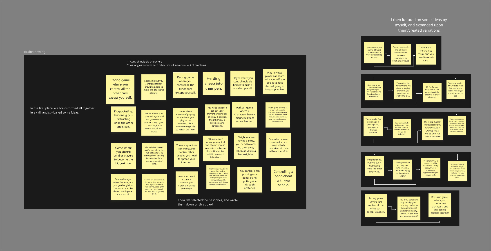
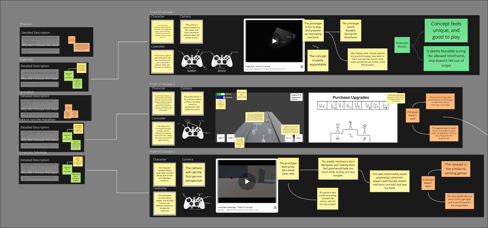
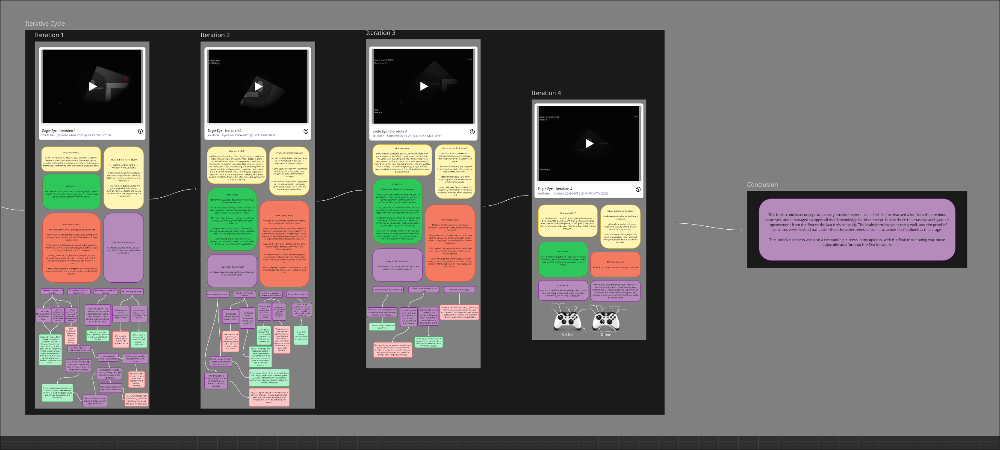
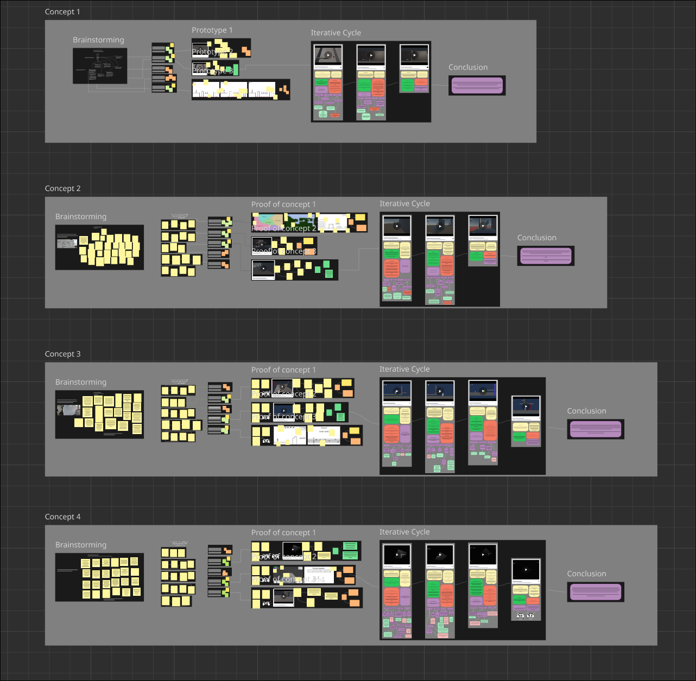
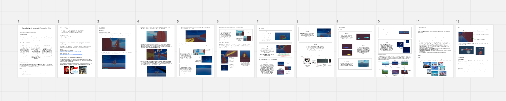

In Shadows and Light
Survive in the shadows, get to the end unscathed.
Overview
This vertical slice is the result of a 4 month design and iteration process, which I will explain in greater detail in the next section of this post. For this project, the aim was to focus heavily on the game design aspect. The objective of the game is quite simple. Use a wide array of movement mechanics to get to the end of each level. You can try it for yourself by visiting the itch.io page to download it.
The design process
Useful links:Design board: miro board
Game Design Document: miro board
The process started with brainstorming. I tried finding interesting ideas around the given theme, and iterated on some of the ideas/created variations.

I then selected the 5 best ideas and expanded upon them, describing them in detail and analyzing if the idea is viable.
Out of these 5 ideas, I chose 3 to turn into proof of concepts, some made in the Unity game engine, and other being simple paper prototypes.

After a final selection, only one of these 3 proof of concepts goes on to the iteration phase, where I constantly improve on the prototype by implementing more features and asking for player feedback.

I repeated this whole cycle 4 times, which left me with 4 polished and well designed prototypes. I then chose one of these four prototypes, and turned it into a fully fledged vertical slice,
featuring art, refined mechanics and code, and multiple levels.

After everything, I compiled all the mechanics into a easy to read game design document that summarizes every aspect of the vertical slice.
